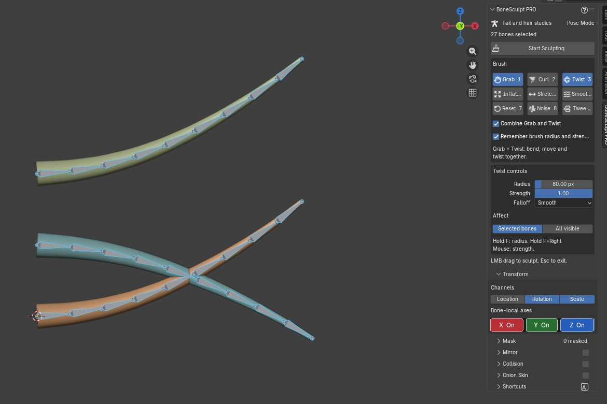

Blender add-on / Vikas Thakur
Pose bones
with a brush.
Shape hair, tails and feathers directly in Blender’s viewport.
regular price

Video unavailable. Showing the actual Blender interface.
Watch it work
Brush. Collide.
Compare.
Three short guides. Pick a scene.
Video unavailable. Showing the actual Blender interface.
One stroke. A new shape.
Grab bends the chain with one viewport stroke.
Connected bones don’t translate. Locks and constraints affect results.
Get PRO on SuperhiveVideo unavailable. Showing the actual Blender interface.
Pose around a surface.
Choose a mesh collider to guide eligible bones away from its surface.
A posing aid, not a guarantee of intersection-free meshes. Requires Rotation and an enabled axis.
Get PRO on SuperhiveVideo unavailable. Showing the actual Blender interface.
See the poses around this one.
Compare earlier and later frames as mesh ghosts.
Keyframe other animated edits before refreshing ghosts; unkeyed values can reset.
Get PRO on SuperhiveChoose your tools
Four brushes.
Or all nine.
Both editions require Blender 5.0+.
Standard 4 brushes
$4.99regular price · USD
PRO Full toolkit
$14.99regular price · USD
| Tools | Standard | PRO |
|---|---|---|
| Grab, Twist, Smooth, Reset | Standard✓ Included | PRO✓ Included |
| Curl, Inflate, Stretch, Noise, Tween | Standard− Not included | PRO✓ Included |
| Channels, local axes, masking, shortcuts, brush memory, Auto Key, undo/redo | Standard✓ Included | PRO✓ Included |
| Combined Grab + Twist, mirror, mesh collision, onion skin | Standard− Not included | PRO✓ Included |
Enable one edition at a time. Current offers on Superhive ↗
Install & start sculpting
- Keep the ZIP zipped. Exit sculpting and disable older BoneSculpt entries or the other edition.
- In Blender, open Edit → Preferences → Add-ons → menu → Install from Disk. Select
bone_sculpt_pro-0.13.0.zipand enable BoneSculpt PRO. Clear “Enabled Add-ons Only” if needed; save Preferences. - Select an armature, enter Pose Mode, and select bones. Press N → BoneSculpt PRO → Start Sculpting. Left-drag to sculpt; Esc or Enter exits.
No extra packages or icons. PRO 0.12.5 and earlier used bone_sculpt; disable that older entry before enabling bone_sculpt_pro.
Brush guide & controls
- 1 · Grab
- Bend chains, or move eligible unconnected bones with Location enabled.
- 2 · Curl
- Curl around the viewing axis using Rotation.
- 3 · Twist
- Turn bones around their local Y axis using Rotation.
- 4 · Inflate
- Spread bone tips away from the cursor; Ctrl pulls inward.
- 5 · Stretch
- Stretch or squash with Scale; optional Grab adds sideways movement.
- 6 · Smooth
- Relax directional kinks using Rotation.
- 7 · Reset
- Ease enabled transform channels toward the rest pose.
- 8 · Noise
- Add adjustable spatial variation to the pose.
- 9 · Tween
- Blend animated poses using pose-transform curves in the active action.
These are PRO’s default number keys. Standard uses 1 Grab, 2 Twist, 3 Smooth, 4 Reset. Customize brush order, shortcuts and hold gestures in the add-on.
| Left-drag | Sculpt |
|---|---|
| Click / Shift-click | Select / toggle bone |
| Hold F + drag | Radius |
| F first, then Right Mouse + drag | Strength or Tween bias |
| X / Y / Z | Isolate a local axis; repeat for all |
| Shift + X / Y / Z | Toggle one local axis |
| M / Shift + M | Mask / unmask selected bones |
| Ctrl + Z / Ctrl + Shift + Z | Undo / redo a completed stroke |
| Esc / Enter | Exit sculpting |
Release hold inputs to confirm; Esc cancels the adjustment preview. For keyboard-only strength adjustment, use Shift+F with “Hold with: Keyboard only”. Right Mouse alone keeps Blender’s normal behavior.
Undo/Redo restores strokes and Auto Key edits while retaining tool settings; masks remain undoable. Settings save per scene. Combined Grab + Twist makes one undo step; turning both brushes off pauses sculpting.
Rig limits & onion-skin precautions
Version 0.13.0 needs Blender 5.0+. Checks used 5.0.1; this does not certify every rig or future Blender version. Some product footage shows an earlier UI. BoneSculpt edits existing pose bones; it does not create rigs or sculpt the mesh.
Any locked rotation axis prevents brush rotation; any locked location axis prevents translation. Connected bones cannot translate directly. Scale locks apply per axis; constraints and drivers affect the result. Check a copy of your rig.
Mirror needs matching bone names. Collision samples bones against a mesh object or collection; it is not full mesh collision or physics. Turning off connected-parent protection can let masked bones move with parents. Disconnect Masked Bones changes the rig’s Connected setting.
Keyframe other animated edits before enabling or refreshing onion skin. Sampling restores this rig’s pose-bone transforms, but object transforms, custom rig-control properties and shape keys can reset to keyed values. Turning off Auto Update changes timing, not this limitation.
Auto Key inserts keys for touched, enabled transform channels at stroke completion; otherwise key edits yourself. For help, contact Vikas through the seller/support link on your Superhive purchase page with your versions, reproduction steps and any error report.
View the current Blender interface ↗9 brushes · Blender 5.0+
Get BoneSculpt PRO.
$14.99regular price · USD
Get PRO on Superhive